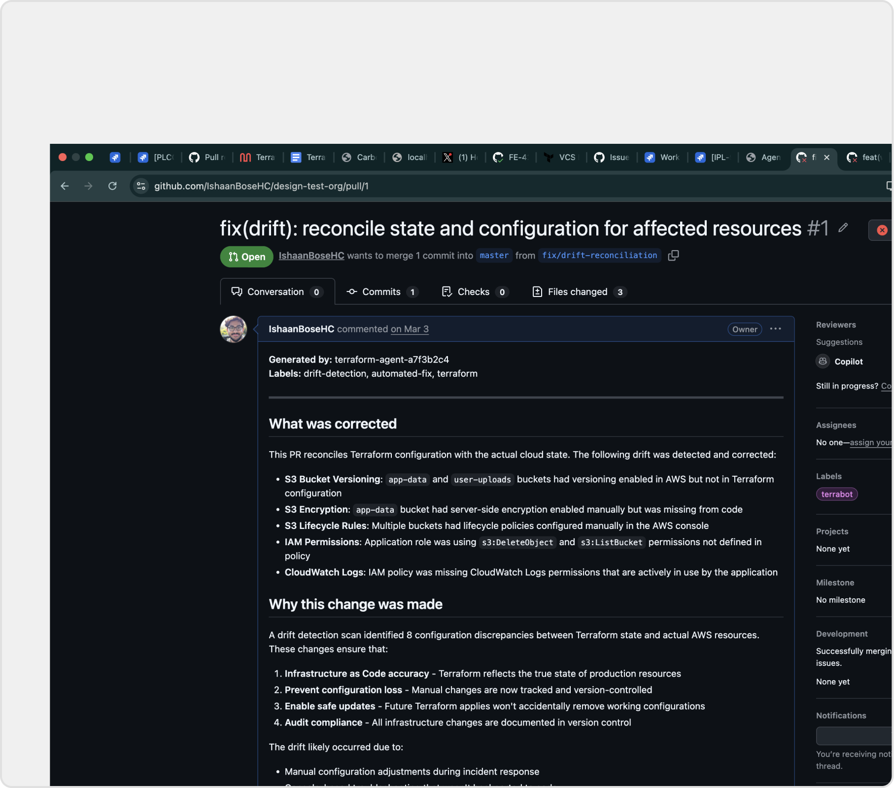
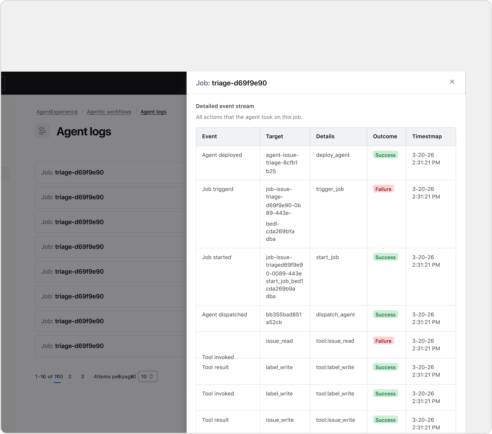
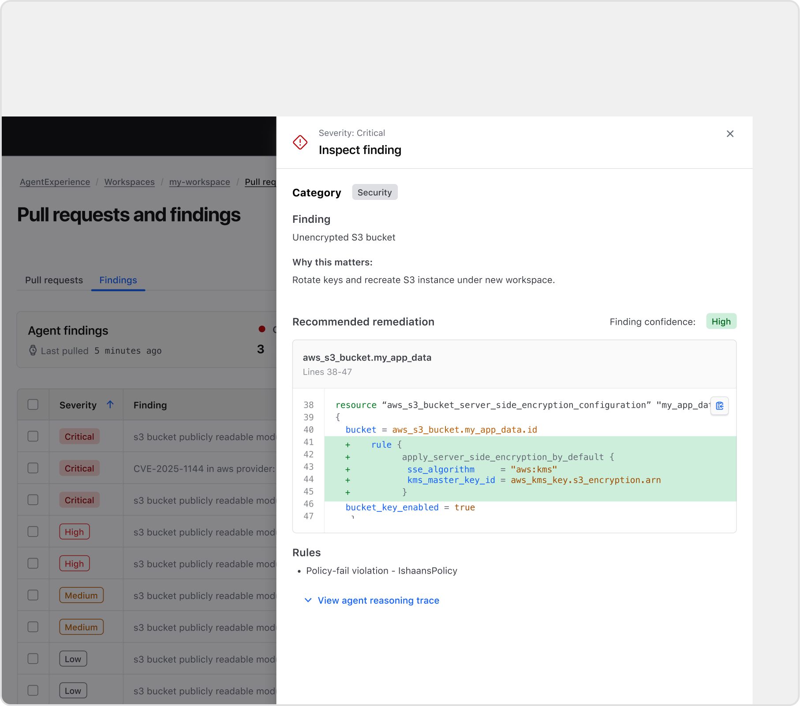
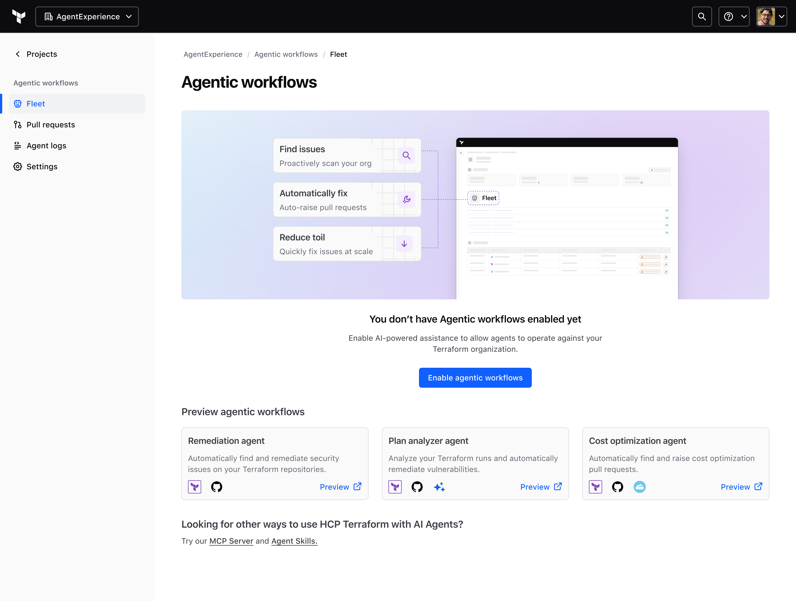
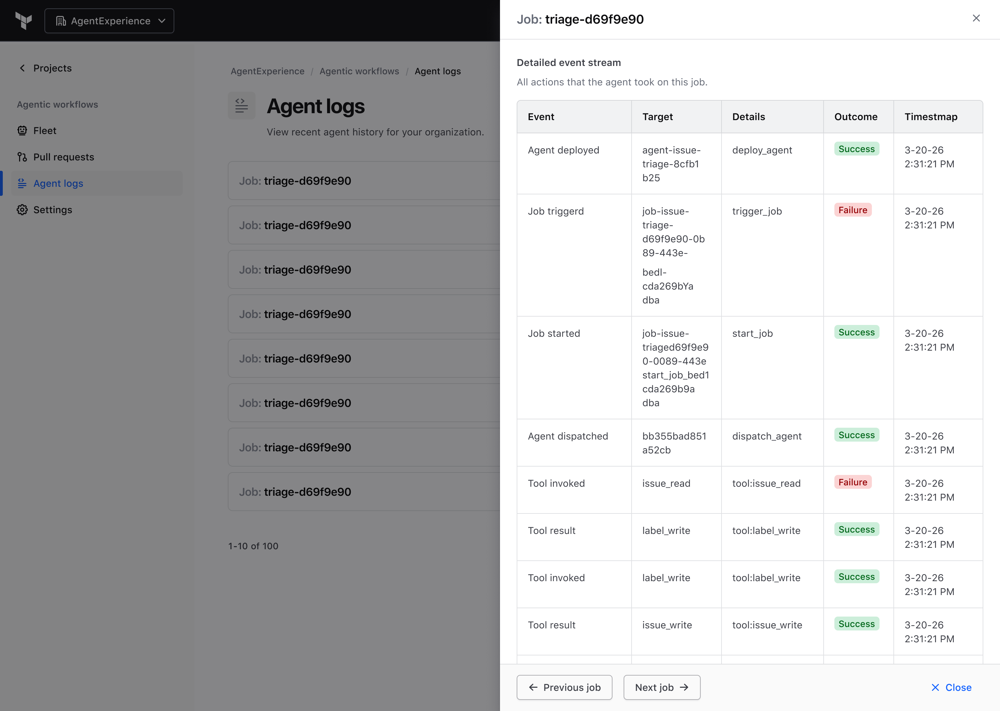

Designing a trustworthy agentic remediation workflow for HCP Terraform
Infrastructure teams already knew about their problems. The gap was between finding an issue and getting a fix back into code. This is what we built to close it.
ORGANIZATION
HashiCorp
WHEN
2026
ROLE
Lead Product Designer
TOOLS
Figma, Claude Code, Copilot CLI
CONTEXT
Agents fundamentally change the way that you approach existing problems.
Infrastructure is no different. With the proliferation of coding agents, and the ubiquity of Terraform, it seemed like a perfect match to introduce agentic workflows to automate some of our core persona's most tedious workflows. The question is, how do we do that?
USER PROBLEM
It is extremely easy to get started with Terraform, AKA "day one" but scaling past that, "day two" is difficult
Security teams could spot misconfigurations but didn't own the code. Platform teams owned standards but not every repo. App teams were closest to delivery but rarely set up for infra remediation. The result: handoffs, backlog churn, and a pile of repetitive work that mattered but belonged to no one.
Common maturity path
Day 2 was our focus due to customer reported friction in scaling
Day 0
Signing up and onboarding users of the platform
Day 1
Provisioning core resources and creating microservices
Day 2
Managing cost, governance and optimization
HOW MIGHT WE
I approached this as a workflow design problem, not a generic AI feature.
My role was to figure out what the first useful experience should be, where trust would break down, and how the workflow could fit the way Terraform teams already operated. I pulled together customer-zero conversations, engineering syncs, and product discussions to find the focus. Three signals kept coming up.
Where the signals pointed
Three how might we's converged into one bet.
Actually central to UX
Determines whether the workflow feels safe. This is crucial to ensuring users can adopt comfortably.
security
Trust: Changes are traceable and reversible
verified_user
Safety: Prevent risky actions before they happen
manage_accounts
Identity: Secure, least-privilege access
notifications_active
Confidence: The right people know at the right time
SOLUTION
A focused remediation loop: detect issue, generate fix, open PR, human review.
We kept the scope tight: one workflow, one loop. The agent finds a remediation opportunity, generates a proposed change, and writes it back through PR mechanics. Every surface points back to that same loop, with enough context at each step that a reviewer can actually act on it.
Customers want something easy to learn and repeat.Familiar
Identify an issue
Propose a fix
Write back through VCS
Review

Auto raising PR's on Github to reduce toil and cutdown on time to remediation.

Logging all actions that an agent takes to drive trust in the system.

Presenting code diffs so that a user understands why a change is being made.
DEEP DIVE
The empty state is a product moment, not a placeholder
Challenge: Agentic workflows ship off by default. Without a meaningful landing, teams that would benefit from this just never turn it on.
Decision: I designed the pre-enablement page to do real work. It leads with what the agent can do, shows a preview before anyone commits to enabling it, and introduces each available agent by name. By the time someone hits "Enable agentic workflows," they already understand what they're signing up for.

Pre-enablement landing: the agent introduces itself before asking for commitment.
Make trust visible inside the workflow
Challenge: An auto-created PR is meaningless without context. Teams needed to understand why a change existed before they could act on it.
Decision: Confidence signal, rule context, blast radius, and a history of prior PRs were not extra polish. They were the product. I treated each as a required surface. Without them, the PR exists but cannot actually be reviewed.
TF
Terra-botcommentedlast month
🤖 Terraform Remediation Scan
This PR was automatically generated by a Terraform remediation agent that scanned the repository for security issues, dependency risks, configuration drift, and hygiene problems. Each finding includes a confidence score and blast radius assessment.
Findings Summary
ID
Category
Severity
Confidence
Blast Radius
Status
TF-001
Dependency
Medium
95%
Low
Fixed
TF-002
Dependency
Medium
95%
Low
Fixed
TF-003
Drift / Reliability
High
99%
High
Fixed
TF-004
Security
High
92%
Medium
Fixed
TF-005
Security
Medium
88%
Low
Fixed
TF-006
Hygiene
Low
97%
Low
Fixed
Detailed Findings
TF-001Terraform version constraint too loose
main.tf:2Medium95% confidenceBlast: Low
-
required_version = ">= 1.0"
+
required_version = ">= 1.5, < 2.0"
Why: >= 1.0 allows any future major version including Terraform 2.x, which may introduce breaking changes. Pinning to < 2.0 protects against unintended major version upgrades in CI/CD pipelines that auto-install Terraform.
Blast radius: Low — only affects environments where Terraform is auto-installed. No resource changes.
TF-002Provider version constraint too loose
main.tf:7Medium95% confidenceBlast: Low
-
version = "~> 3.0"
+
version = "= 3.2.4"
Why: ~> 3.0 allows any 3.x minor version to be resolved at init time if the lock file is absent or regenerated. This can introduce behavioural changes in production. The currently installed 3.2.4 is now pinned exactly, reinforced by committing the lock file (TF-006).
TF-003timestamp() trigger causes forced replacement on every apply
main.tf:13High99% confidenceBlast: High
-
always_run = timestamp()
+
run_once = "initial"
Why: timestamp() is evaluated at plan time and always returns a new value, meaning null_resource.example is destroyed and recreated on every terraform apply. In a real infrastructure scenario, this attached to a provisioner would re-run that script on every deploy, potentially wiping configuration, restarting services, or triggering cascading changes. This is one of the most common causes of unintended Terraform drift.
Blast radius: High — if the provisioner performs real side-effects (installs, restarts, API calls), this causes them to fire on every apply. Replacing with a static trigger ensures it runs only once or when explicitly changed.
region: Must match AWS region format (us-west-2 style)
Why: Without validation, a misconfigured terraform.tfvars silently propagates into provisioners and resource triggers. Validation fails fast at plan time with a clear error message.
Blast radius: Medium — no existing resources change. Adds a guardrail that will block terraform plan on invalid inputs.
TF-005Outputs expose resource IDs without sensitive = true
outputs.tfMedium88% confidenceBlast: Low
Added sensitive = true to all three outputs.
Why: Resource IDs surfaced as plain outputs are printed to stdout during terraform apply and stored unredacted in state. If this module is consumed by a parent module or CI pipeline, these values may be logged — especially important when outputs evolve to include real ARNs, connection strings, or credentials.
Blast radius: Low — no infrastructure change. Consumers referencing these outputs in other modules may need to handle them as sensitive values.
TF-006.terraform.lock.hcl excluded from git + terraform.tfvars committed
.gitignoreLow97% confidenceBlast: Low
Removed .terraform.lock.hcl from .gitignore — it is now committed.
Added terraform.tfvars to .gitignore — replaced with terraform.tfvars.example.
Why: The Terraform docs explicitly recommend committing the lock file so all team members and CI systems use identical provider versions. Committing tfvars with real instance IDs and database names to a potentially public repo is a security risk.
Blast radius: Low — no resource changes. Improves reproducibility and security posture.
Files Changed
File
Change
main.tf
Version constraints tightened; timestamp() trigger replaced
variables.tf
Validation blocks added to all 4 variables
outputs.tf
sensitive = true added to all outputs
.gitignore
Lock file unblocked; terraform.tfvars excluded
.terraform.lock.hcl
Now committed to enforce provider pin
terraform.tfvars
Removed from tracking (contains prod values)
terraform.tfvars.example
Added as a safe template for contributors
Test Plan
🤖 Generated by Terraform Remediation Agent
Confidence signal
Surfacing certainty as a percentage gives reviewers a clear signal of how thoroughly to audit before merging.
Blast radius
Shows scope of impact across workspaces and modules — so reviewers understand consequences before a single line merges.
Verifiable outcomes
The agent pre-checks its own work. Reviewers see a test plan already run, not just generated code to take on faith.
Treat write-back as a reusable product surface
Challenge: Every new integration would arrive with its own conventions. Designing a one-off handoff each time wasn't going to scale.
Decision: I built write-back around three shared surfaces any source can plug into: a unified PR feed, a normalized findings inbox, and a per-finding inspect view with the rule, recommended diff, and reasoning trace.
Per-finding inspect view: rule, diff, confidence, and reasoning. Everything the reviewer needs before deciding.
Make agent actions auditable, not opaque
Challenge: When an agent acts autonomously, "what did it actually do?" becomes a trust question fast.
Decision: I designed agent logs as a first-class surface, not a debug afterthought. Every job captures a full event stream: deploys, tool calls, results, successes, and failures. Admins can drill in and replay exactly what happened, in order. That verifiability is what makes the rest of the workflow safe to leave on.

Agent log drill-down: a full event stream per job run, replayable in sequence.
Favor the user's operational model over the simpler technical model
Challenge: Repo-based onboarding was technically simpler, but it obscured blast radius and ownership, especially in monorepos and shared-module setups.
Decision: I pushed for workspace and project context over repo-based thinking, because it matched how Terraform operations are actually managed. That gave teams a clearer sense of what the agent was acting on and fit the mental model they already used.
Repository based onboarding
Simpler to implement
Single repository
Workspace 1
Workspace 2
Workspace 3
...
ⓘOne repository can map to many workspaces, which causes blast radius and ownership issues
Workspace or project based onboarding
Better mental model
Project A
Workspace 1
Workspace 2
Workspace 3
Project B
Workspace 4
Workspace 5
Workspace 6
✓Clear blast radius, clear ownership and easier to learn
REFLECTION
In enterprise AI, the product is not just automation. It is automation people can understand, verify, and safely act on.
We narrowed a broad agentic concept into a focused remediation workflow and made trust requirements explicit. Confidence, explainability, blast radius, and history were core, not extras.
This project sharpened how I think about AI in enterprise products. The design problem was never "how do we add an agent?" It was how to make automation feel accountable inside a messy system of repos, workspaces, permissions, and human ownership. The more powerful the automation, the more important it is to design for verification, control, and shared understanding.
 Ishaan Bose
Ishaan Bose